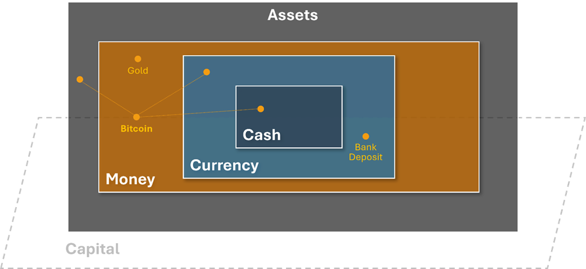

+Mises quote.
The study has been corrupted by math and various attempts to more harden the discipline in line with the physical science. Just as many of us know home economics as the difficult to admit for teenage masculinity quite engaging and fun class in high school where we learned the finer points of managing the home. Economics is the interconnection of the largest system, where humans interface with capital which interface with production which interface with goods which exchange things to better achieve one’s own outcomes.
Now allow us to get some core definitions out of the way – this perspective will carry through the entire book, so please take note – if you aren’t already aware – definitional alignment, semantics, and in some cases, slight-of-hand plays keenly into many of the isms we discuss.
Do we value water less than diamonds? Without one we die, without the other there is no discernable impact on our lives. Yet water is cheap.
Why diamonds and not gold? The reasons there are clear, good marketing and state mandated bans. Optimally, and historically, the dowry of a wedding was gold. In the West, with the various gold actions we’ll explore later it became harder if not outright illegal to purchase or own anything beyond superficial amounts of gold. Some heady entrepreneurs come cartelists saw an opportunity and jumped. I get the sense we’re in the later stages of that market due in part to broad understanding but truly driven by science and the nearly alchemic magic that has brought forth the synthetic versions of the thing; but it’s taken us nearly a century to come to our sense. Why dollars and not gold? Here too we see a rhythm, a hint of a pattern, the subtle whisper of a familiar tune. Is it useful to look at the history of fiat through the lens that shaped and shapes diamonds and gold?
Where Bitcoin fits here is what we embark to explore. Whether water, or diamonds, or dollars, or gold – the dynamism of its potential isms are vast…
This isn’t basic arithmetic, this isn’t Cartesian math, there are n dimensions at play.
Prefactory to anything more, it is worth establishing some baseline clarity around semantics and how we see the vast world of economic words inerplaying. These is an area of constant confusion, much of which a result of low declaration and consistency in their usage today, but also in part deliberately to establish any number of circular semnatic "gotchas" and confusing propositions.
We care less about this approach being "right" in any absolute sense, and more about it being useful in framing the discussion around Bitcoin and its place in the economic landscape. It will, from this point forward, be our grounding and definitional framework throughout.
Assets are the vast, wild commons of human value: everything our species has ever deemed worth possessing, protecting, or passing on – from fertile land and forged tools to shimmering gems, painted canvases, and lines of code that promise scarcity. They are the raw material of wealth, indifferent to borders or ledgers, existing before any society agrees to call them "money" and persist long after currencies crumble.
Money is the alchemical subset of assets that a community, through unspoken pact or fierce debate, accept between parties as a bridge between desire and possession: a medium to exchange today's labor for tomorrow's bread, a unit to measure the incomparable, a store to shield value from time's erosion . Money needs no king or central bank; it arises wherever trust converges – be it shells on a Pacific shore, gold in a prospector's pan, or bits verified by distant strangers.
Currency then is money anointed by authority: the sanctioned tokens of a state or sovereign, stamped with symbols of power and enforced as legal tender. It carries the weight of compulsion –"thou shalt accept this or face penalty" – transforming the voluntary into the obligatory. It is money domesticated, often inflated or debased at the whim of those who issue it, yet ubiquitous in the daily choreography of modern life. They come and go but do show characteristics aligned to a non-fiat framing in those historically proven to outlive or simply exist the longest, are those with the lowest growth rates.1
Cash is the most intimate incarnation of currency: physical, bearer-form fragments that pass hand to hand without witness or record. Cash is anonymous touch—crisp notes tucked in pockets, coins clinking in jars—embodying finality in settlement and privacy in possession. It is currency stripped of intermediaries, the last refuge of untraceable autonomy in an age of digital surveillance.
Capital is an orthogonal, cross-cutting concept and not a layer itself. It’s a current flowing through all the others: accumulated assets deployed toward future production, the patient seed corn of human ambition. Capital is wealth set to work rather than spent or hoarded – factories built from saved currency, networks grown from held money, innovations funded by sacrificed consumption. It respects no single category, manifesting as gold lent at interest, land cultivated, or knowledge compounded across generations. Capital is the quiet engine turning present restraint into tomorrow's abundance, indifferent to whether its vessel is asset, money, currency, or cash.2
Money is a way of measuring wealth but is not wealth in itself; it is merely an ingenious device for facilitating the exchange of real wealth.
– ALAN WATTS
1 This taxonomy is not universally accepted and may vary across different economic theories
and schools of thought.
2 This framework is a simplification and may not capture all nuances of each category.